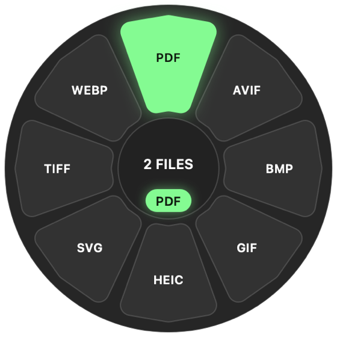
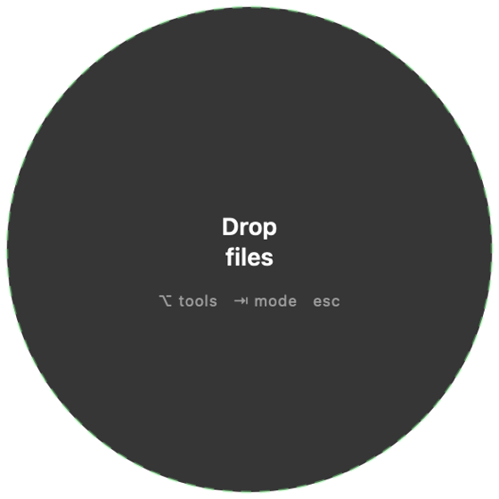

Hold Shift, drag a file, drop it on a petal. Kuori puts a wheel of every format that file can become right in front of you — and converts it on your Mac, without uploading a thing.

How it works
No app to bring forward, no file picker, no "choose an output folder" dialog. The wheel appears, you let go, it's done.
Start dragging a file out of Finder with Shift held. The wheel appears in the middle of your screen, already showing what that file can turn into.
Only formats every dragged file can produce are offered, so a mixed selection never gives you a dead end. Arrow keys and ↵ work too.
The result lands next to the original and Finder reveals it. The wheel gets out of your way on its own.
Formats
Nine conversion engines are bundled inside the app, so it works on a machine with nothing installed — no Homebrew, no Python, no first-run download.
| Class | Converts | Engine |
|---|---|---|
| Images | jpg png webp heic avif tiff bmp gif in any direction, SVG → raster, and raster → SVG by tracing |
libvips · ImageIO · resvg · potrace |
| Audio | mp3 m4a aac wav flac ogg opus aiff |
ffmpeg |
| Video | mp4 mov mkv webm avi m4v, plus → GIF and → any audio format |
ffmpeg |
| Documents | md html rtf txt epub docx odt, Office → PDF, PDF → txt/docx |
pandoc · LibreOffice |
images → PDF, PDF → a folder of png jpg tiff pages |
PDFKit |
|
| Archives | folder ↔ zip tar tar.gz 7z, and extract zip tar 7z rar |
bsdtar · 7-Zip |
Tools
Same file, rewritten. Two of these lean on frameworks already in macOS, so they cost nothing and never leave the machine.
OCR runs Vision and writes a real invisible text layer, so the PDF is selectable and searchable. Background removal uses the same subject-lift the system uses, and gives you a transparent PNG.


Recipes & watch folders
A recipe chains steps: resize to 1600, strip metadata, save as
WebP. Point a watch folder at it and anything you drop in that folder is
converted and filed automatically, original moved to _processed/.
Command line
Everything the wheel can do, kuori can do — same capability
graph, same bundled engines.
kuori convert photo.png --to webp --quality 80 kuori convert *.jpg --to pdf --out ~/Desktop kuori convert shot.png --preset web-jpg # saved preset kuori tool ocr scan.png # → scan-ocr.pdf, searchable kuori recipe square-jpg *.png kuori watch add ~/Dropbox/Incoming --to webp kuori formats # what converts to what
Local only
The reason this exists: dragging a passport scan, a contract, or a client's raw footage into a free web converter means handing it to someone else's server. Kuori has no network code in the conversion path at all — the engines run as child processes on your Mac and the bytes never leave it.

Install
Kuori is a personal project, MIT licensed, built the way the rest of my Mac tools are: Swift and AppKit, SwiftPM, no Xcode project, and the safety checks shipped inside the binary.
git clone https://github.com/ishanmalu/kuori cd kuori swift run Kuori --selftest # 50 graph + logic checks Scripts/bundle-engines.sh # vendor ffmpeg, vips, pandoc, … Scripts/build-app.sh 0.3.0 # → dist/Kuori.app
PATH.